Laboratorio 5
1. Introducción y objetivo
En este laboratorio montamos un servicio de base de datos en alta disponibilidad (Amazon RDS con MySQL en configuración Multi-AZ) y publicamos después, a través de un servidor web EC2, los datos que contiene.
Hemos elegido este laboratorio porque nos permite trabajar con un servicio de bases de datos de AWS y ver cómo se comporta ante despliegues en escenarios web dentro de la misma infraestructura.
2. Procedimiento
CS01 - Creación del security group
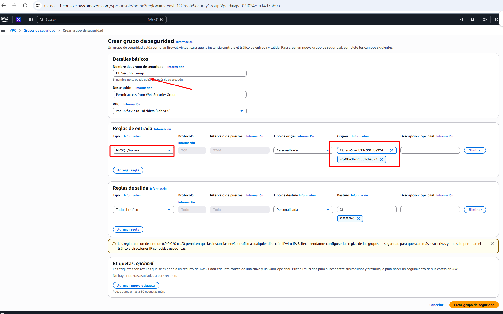
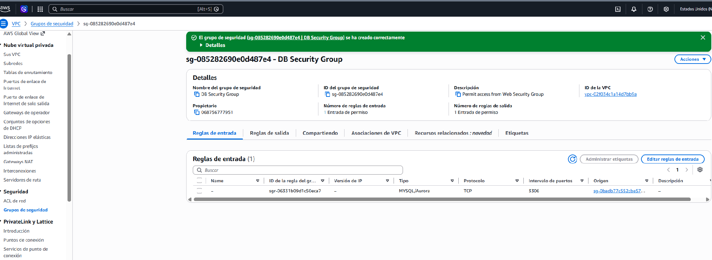
Accedemos a la VPC de AWS y creamos un grupo de seguridad llamado DB Security Group, asociado a nuestra Lab VPC.
Configuramos una regla de entrada de tipo MySQL/Aurora, que utiliza el puerto TCP 3306, y seleccionamos como origen el Web Security Group.
De esta manera, permitimos que nuestro servidor web EC2 pueda comunicarse con la base de datos RDS, evitando que cualquier otro origen pueda acceder directamente a ella por este puerto.
CS02 - Creación de grupos de subredes de BBDD
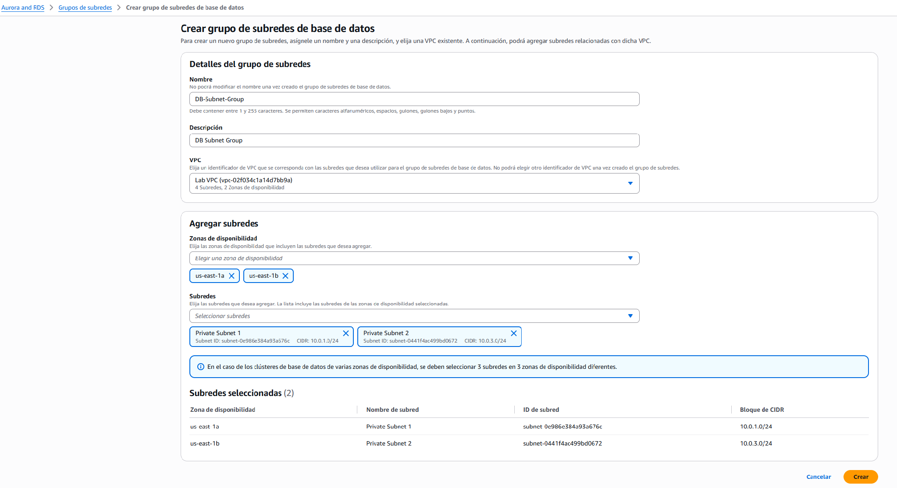
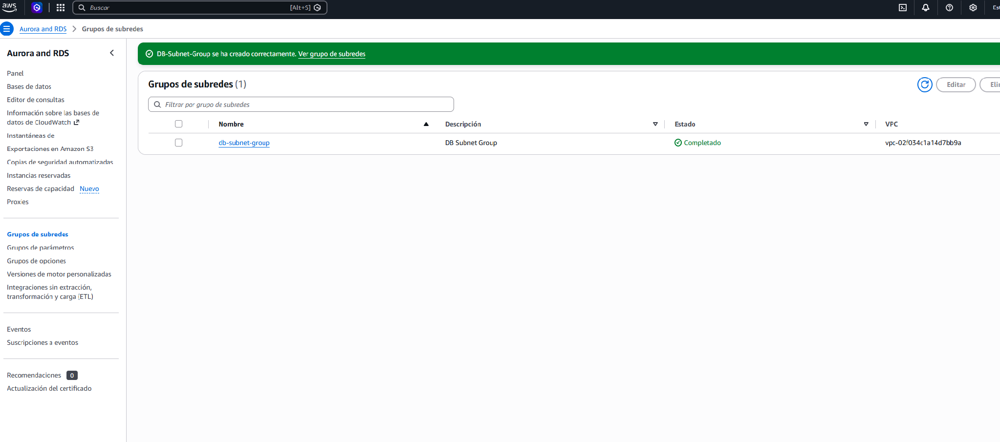
Accedemos al servicio RDS de AWS y creamos un grupo de subredes llamado DB-Subnet-Group, asociado a nuestra Lab VPC.
Seleccionamos dos subredes privadas, con los rangos IP 10.0.1.0/24 y 10.0.3.0/24, ubicadas en dos zonas de disponibilidad diferentes (us-east-1a y us-east-1b).
Con esta configuración indicamos a RDS en qué subredes puede desplegar nuestra base de datos y dejamos preparada la infraestructura para utilizar una configuración Multi-AZ.
CS03 - Creación de la base de datos MySQL
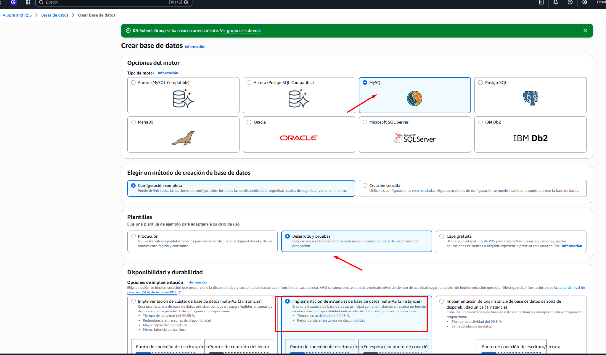
Accedemos al servicio RDS de AWS para crear nuestra base de datos. Seleccionamos MySQL como motor y utilizamos la plantilla de desarrollo y pruebas (Dev/Test).
También elegimos una configuración Multi-AZ, que permite disponer de una instancia principal y otra de reserva en diferentes zonas de disponibilidad.
De esta manera, si la instancia principal falla, AWS puede activar la instancia de reserva para mantener el servicio disponible.
Configuración de credenciales y selección de la instancia db.t3.micro
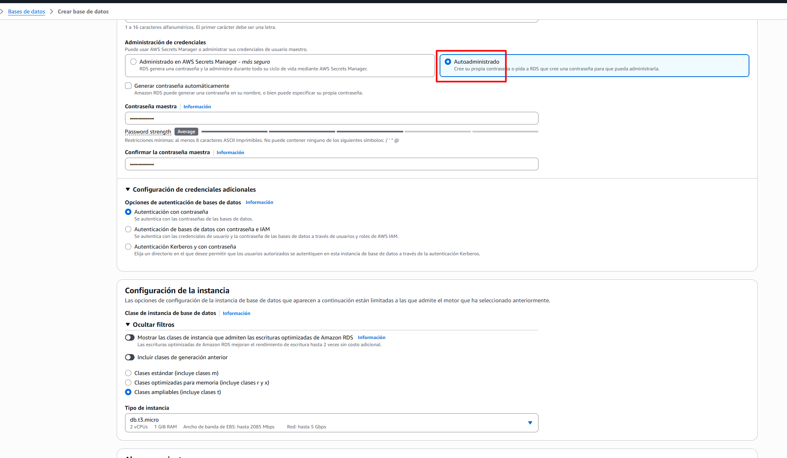
En este apartado seleccionamos la opción de autoadministrar las credenciales, para poder establecer manualmente el usuario y la contraseña de nuestra base de datos, sin utilizar AWS Secrets Manager.
A continuación, configuramos el tipo de instancia db.t3.micro, que dispone de recursos suficientes para realizar las pruebas de este laboratorio sin necesidad de utilizar una instancia de mayor capacidad.
Configuración del almacenamiento y conectividad de la base de datos
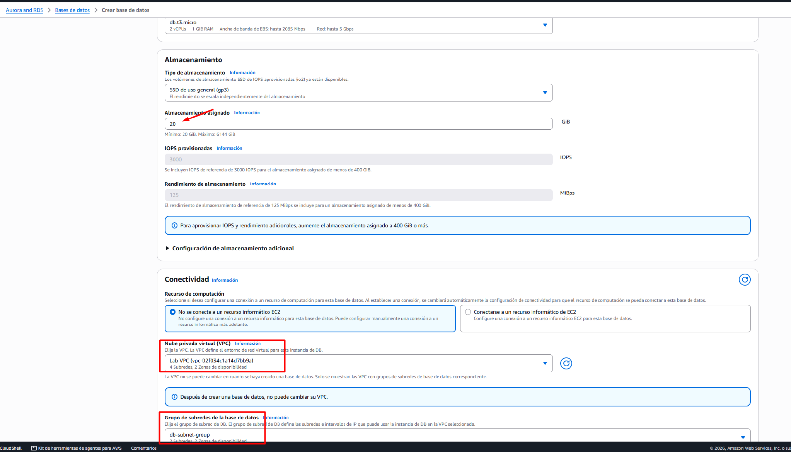
Configuramos el almacenamiento de nuestra base de datos utilizando un disco SSD de uso general (gp3) con una capacidad de 20 GiB, suficiente para las necesidades del laboratorio.
En el apartado de conectividad seleccionamos nuestra Lab VPC y el grupo de subredes DB-Subnet-Group que hemos creado anteriormente.
De esta manera, la base de datos utilizará la infraestructura de red que ya tenemos preparada en AWS.
Asignación del grupo de seguridad a la base de datos RDS
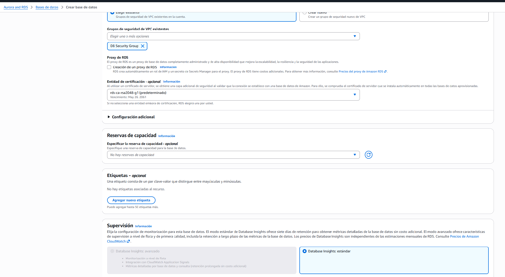
En el apartado de conectividad seleccionamos el DB Security Group que hemos creado anteriormente en la primera tarea del laboratorio.
Este grupo de seguridad permite que nuestro servidor web EC2 pueda conectarse a la base de datos MySQL a través del puerto 3306, manteniendo controlado el acceso.
También dejamos desactivada la monitorización adicional, siguiendo las indicaciones del laboratorio.
Configuración final de la base de datos MySQL
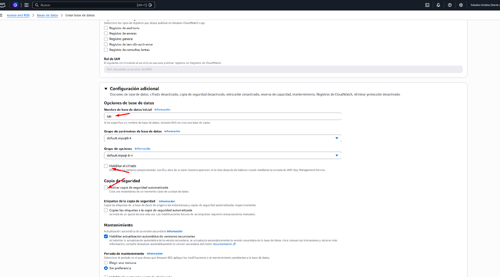
Finalizamos la configuración de nuestra base de datos asignándole el nombre lab, que utilizaremos posteriormente para conectarnos desde la aplicación web.
También desactivamos el cifrado y las copias de seguridad automáticas, siguiendo las indicaciones del laboratorio, para simplificar la configuración y agilizar el despliegue.
Por último, revisamos las opciones de monitorización y mantenimiento antes de proceder a crear la base de datos.
Creación y comprobación del estado de la base de datos RDS
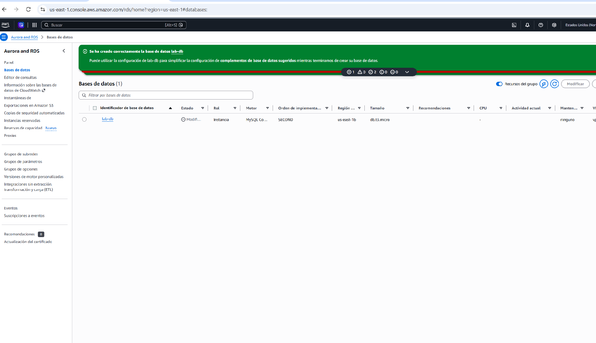
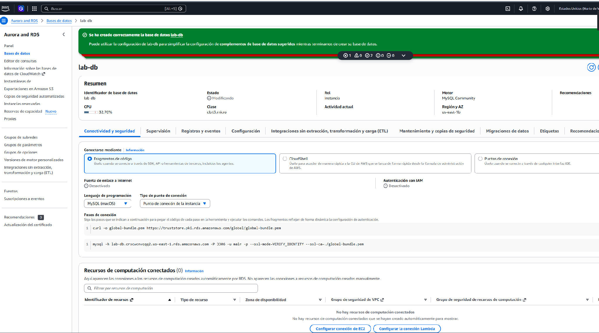
Una vez finalizada la configuración, pulsamos en Crear base de datos y comprobamos que AWS ha creado correctamente nuestra instancia lab-db.
Accedemos a los detalles de la instancia, donde podemos consultar su estado, el motor MySQL utilizado y las opciones de conectividad.
En este momento, la base de datos todavía se encuentra en proceso de configuración, por lo que debemos esperar a que su estado cambie a Available (Disponible) antes de utilizarla.
CS04 - Acceso al servidor web EC2 y configuración de la conexión con RDS
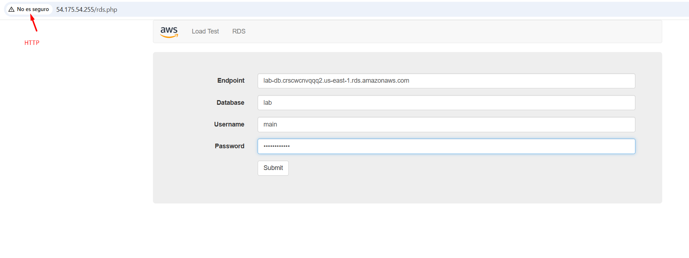
Accedemos al servidor web EC2 mediante su dirección IP pública, utilizando el navegador y el protocolo HTTP.
Una vez dentro, seleccionamos el apartado RDS e introducimos los datos de conexión de nuestra base de datos MySQL: el Endpoint, el nombre de la base de datos lab, el usuario main y la contraseña configurada anteriormente.
Con estos datos preparados, pulsamos Submit para establecer la conexión entre nuestra aplicación web y la base de datos alojada en Amazon RDS.
Comprobación de la conexión entre EC2 y RDS
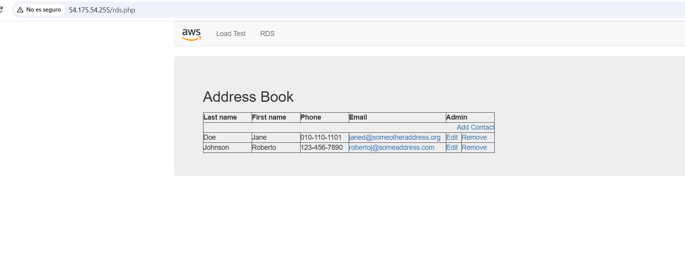
Una vez introducidos los datos de conexión, comprobamos que la aplicación web se conecta correctamente a nuestra base de datos MySQL alojada en Amazon RDS.
Se muestra la aplicación Address Book, donde podemos consultar los contactos almacenados y realizar operaciones como añadir, modificar o eliminar registros.
Esto nos permite comprobar que la comunicación entre nuestro servidor EC2 y la base de datos RDS funciona correctamente.
Pruebas de inserción y modificación de registros en MySQL
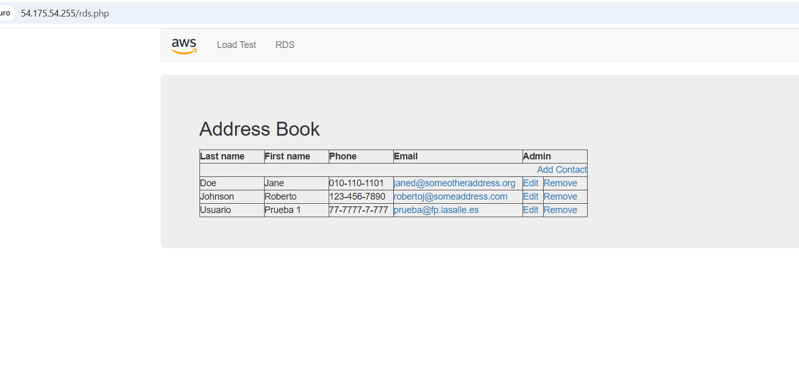
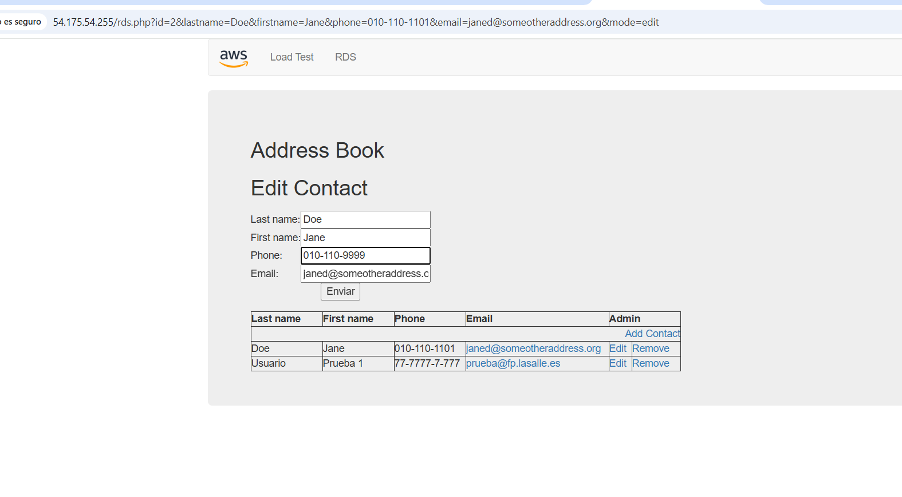
Para comprobar que nuestra base de datos funciona correctamente, realizamos diferentes operaciones desde la aplicación Address Book.
Primero añadimos un contacto de prueba y comprobamos que aparece en la lista junto con los contactos existentes.
Después utilizamos la opción Edit para modificar el número de teléfono de otro contacto y comprobamos que la aplicación nos permite actualizar sus datos.
Con estas pruebas verificamos que podemos insertar y modificar información en nuestra base de datos MySQL alojada en Amazon RDS.